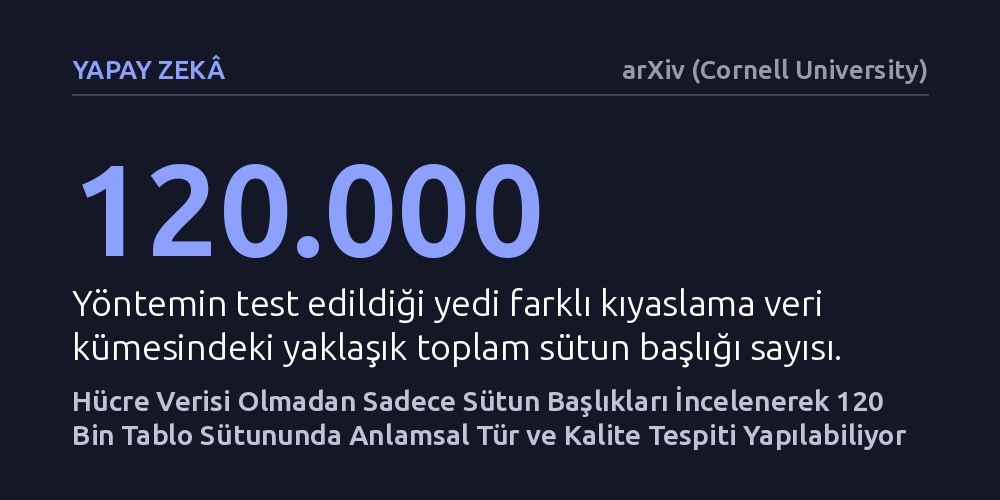

YAPAY-ZEKA · arXiv (Cornell University) · 2026-10-11
Araştırmacılar, tablo hücrelerindeki değerlere erişilemediğinde yalnızca sütun başlıklarına bakarak anlamsal türlerin ve veri kalitesi sorunlarının belirlenip belirlenemeyeceğini araştırdı. Yaklaşık 120.000 sütunda test edilen kural tabanlı sistem, verileri 39 türe ayırıp kalite puanı üretebilse de katı kıyaslama testlerinde sınırlı başarı gösterdi.
Büyük veri tabanlarında hücre içeriklerini gizlilik veya boyut nedeniyle göremediğimiz durumlarda bile, yalnızca sütun isimlerinden yola çıkarak veri kalitesi ve hata denetimi yapılabileceğini gösteriyor.

Günümüzde yapay zeka modelleri ve bilgi grafikleri inşa edilirken devasa boyutlarda veri tablolarından yararlanılıyor. Ancak pratikte her zaman tablonun içindeki satır ve hücre değerlerine erişmek mümkün olmuyor. Veri gizliliği düzenlemeleri, yüksek dosya boyutları ya da bozuk hücre içerikleri nedeniyle sistemler çoğunlukla sadece tablonun en üstündeki sütun başlıklarıyla, yani üstveriyle baş başa kalıyor.
Bu durum, 'yaş', 'gelir' veya 'tarih' gibi yalnızca sütun isimlerine bakarak bir tablonun ne anlattığını ve verinin sağlıklı olup olmadığını anlayıp anlayamayacağımız sorusunu doğuruyor. Eğer sadece başlıklar üzerinden güvenilir bir yapı kurulabilirse, hücrelerdeki hassas verilere dokunmadan büyük veri tabanlarını taramak ve hataları önceden yakalamak mümkün hale gelebilir.
Araştırmacılar, hücre değerlerine ihtiyaç duymadan çalışan ve sütun başlıklarını merkeze alan açıklanabilir bir yazılım çatısı geliştirdi. Bu sistem, sütun başlıklarındaki kelimeleri önceden hazırlanmış sözlük kaynaklarıyla eşleştirerek 39 farklı yorumlanabilir standart türe dönüştürüyor. Her eşleşmede hangi anahtar kelimenin hangi türe yol açtığı izlenebilir biçimde kayıt altında tutuluyor.
Sistem, bir sütunun türünü belirledikten sonra bu türe özgü veri kalitesi kurallarını devreye sokuyor. Eksik veriler, tekrarlanan kayıtlar, mantıksız değer aralıkları, yanlış veri türleri ve zaman uyumsuzlukları taranıyor. Tespit edilen tüm bu sorunlar, 'HeadersIQ' adı verilen ve ağırlıklandırılmamış hafif bir kalite puanında toplanıyor.
Yöntemi sınamak için UCI, Prague, Kaggle, VizNet/Sato, SOTAB, T2Dv2 ve SemTab 2024 gibi yedi farklı kaynaktan toplanan yaklaşık 120.000 sütun başlığı kullanıldı. Ayrıca sistemin DBpedia gibi genel bilgi grafiklerine uyumu da paralel bir eşleme hattıyla test edildi.
Deney sonuçları, geliştirilen yaklaşımın gürültülü ve standart dışı gerçek dünya üstverilerinde geniş bir pratik kapsama alanına ulaştığını gösterdi. Sistem, hücre içeriklerine hiç bakmadan pek çok sütun başlığını doğru biçimde sınıflandırmayı ve olası kalite sorunlarını işaretlemeyi başardı.
Buna karşın SemTab 2024 yarışmasının üstveriden bilgi grafiğine dönüşüm parkurunda, resmi ve katı ölçütlere göre alınan sonuçlar oldukça mütevazı kaldı. Yazarlar bu durumu 'resmi katı değerlendirme sonuçları mütevazı düzeyde gerçekleşti' ifadesiyle özetliyor.
Bu farkı incelemek için yapılan kör tanısal denetim, uyumsuzlukların büyük bölümünün sistemin mantıksız tahminler yapmasından değil; kıyaslama ölçütlerinin aşırı katı olmasından ve eşanlamlı kavramların farklı ontolojilerde farklı adlandırılmasından kaynaklandığını ortaya koydu. Yazarlar bu analizi resmi skoru artıran bir düzeltme olarak değil, anlaşmazlık kalıplarını açıklayan bir teşhis olarak sunuyor.
Bu bulgular, hücre içeriğine erişilemeyen durumlarda yalnızca üstveri üzerinden veri sağlığı kontrolü yapmanın uygulanabilir bir yol olduğunu kanıtlıyor. Özellikle veri gizliliğinin ön planda olduğu kurumsal ortamlarda veya petabaytlarca veriyi baştan sona taramanın imkansız olduğu senaryolarda, hafif bir ön eleme aracı olarak işlev görebilir.
Ancak çalışma aynı zamanda yalnızca başlıklara güvenmenin sınırlarını da net biçimde gösteriyor. Sütun isimleri yanıltıcı, kısaltılmış veya bağlamdan kopuk olduğunda, hücre değerlerinin teyidi olmadan bilgi grafiklerine kusursuz bir entegrasyon sağlamak güçleşiyor. Başlık temelli yaklaşım, tam teşekküllü veri doğrulamanın yerini almaktan ziyade hızlı bir ilk savunma hattı olarak değerlendirilmeli.